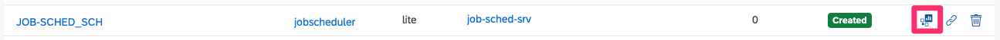

job-sched
Job Scheduler Dashboard
The dashboard can be found in the subaccount and space where you deployed the app under service instances.

/sched/ path handled by job-sched-srv : Authorization Required
/util/ path handled by job-sched-srv : Anonymous Endpoints